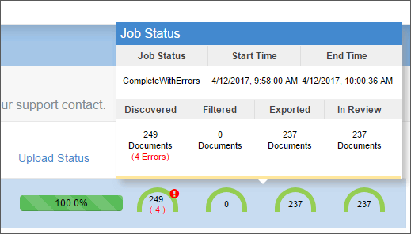

Click  .
.
In the Custodian field, enter the needed name. This custodian will be added to the Processing case as part of the upload.
Expand the options below to find the answers to our most common questions about the Self-Service module.
Usually, this is caused by the eCapture Worker being turned off. Contact your administrator to turn on the worker.
No, images will not automatically be generated. In order to generate images, follow the
If the custodian you need does not exist, you must add it:
Click .
In the Custodian field, enter the needed name. This custodian will be added to the Processing case as part of the upload.
Self-Service only accepts uploads in container file format (zip, rar,
pst, nsf, etc.). If you need to upload non-container files, you can do so through
Use the icons next to the Upload
Status progress bar to cancel, pause, or restart an upload
job. See
If there are any documents with errors, the number of errors display on the status gauge in Upload history and status grid.
The errors also display when you click the status gauge to display the Job Status popup.

See
There is no limit on the amount of data you can upload through Self-Service. The recommendation of upload size is completely dependent upon the user’s bandwidth and upload speed.
Related Topics